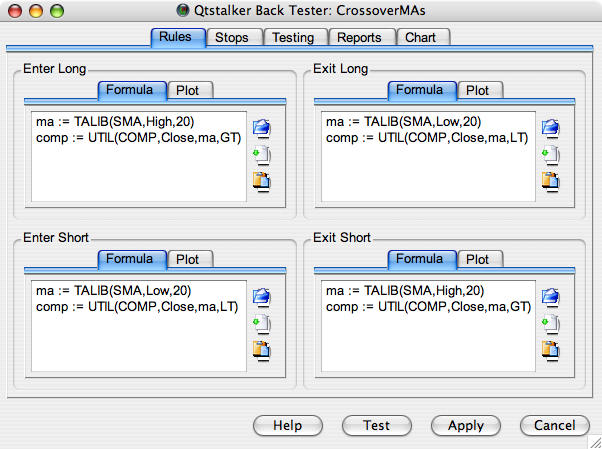

Frequently Asked Questions
Back Tester Rules
The rules page allows you to create an indicator formula for each of the four trade actions. The four trade actions are:- Enter Long - Enter a long trade if the indicator issues a buy signal. A long position will only be entered if the trading status is out or short.
- Exit Long - Exit a long trade the indicator issues a
sell signal.
- Enter Short - Enter a short trade if the indicator issues a sell signal. A short position will only be entered if the trading status is out or long.
- Exit Short - Exit a short trade the indicator issues a buy signal.

Here the above shot shows a simple moving average crossover formula
for each trading rule.
Here is a breakdown of the enter long formula:
1. We create a 20 period SMA of the bar high. We call the variable
'ma'.
2. We create a variable called 'comp'. This variable uses the COMP
function of the UTIL indicator to then generate a boolean array
with the parms that generate a TRUE signal if the bar close is > the
'ma' variable. Note: that we have to plot the 'comp' variable on the
plot page which is not shown in the above picture. qtstalker
needs to know which variable contains the boolean logic used to
generate signals.
The exit long formula breakdown is like this:
1. We create a 20 period SMA of the bar low. We call the variable
'ma'.
2.
We create a variable called 'comp'. This variable uses the COMP
function of the UTIL indicator to then generate a boolean array
with
the parms that generate a TRUE signal if the bar close is < the 'ma'
variable. Note: that we have to plot the 'comp' variable on the plot
page which is not shown in the above picture. qtstalker
needs to know which variable contains the boolean logic used to
generate signals.
**CRITICAL**
In order for any formula to work, you must have a boolean variable that
is plotted on the plot page of each rule to generate the
buy/sell signals. A TRUE value will issue the signal that applies to
the particular rule. The plotted step is the one that tells
qtstalker which step contains the logic for the trading rule signals.
If a non
boolean variable or multiple plots are entered, the results will be
unreliable.